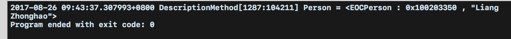
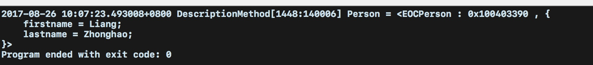
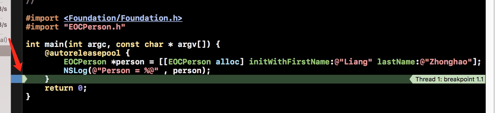
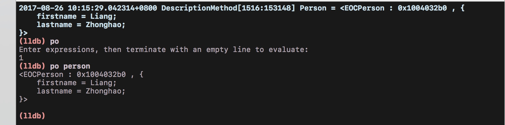
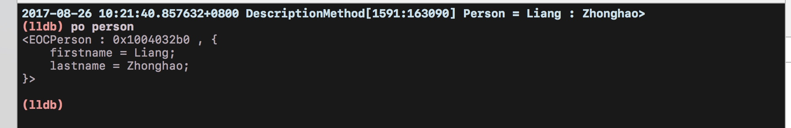

调试程序时，我们一般要将对象的属性NSLog出来：
NSLog(@"object = %@",object);
如果我们输出的对象是数组，或者字典和其它数据是可以将数据打印出来。但是如果打印的是自定义的类，那么输出的对象就类似于：
object = <EOCPerson:0x7fd9a1600600>
上面这种信息很不实用，所以我们要在自己的类里覆写description方法，否则打印信息时就会调用NSObject类所实现的默认方法。此方法定义在NSObject协议里，不过NSObject类也实现了它。
想输出更为有用的信息也很简单，只需覆写description方法并将描述此对象的字符串 返回即可。例如，有下面这个代表个人信息的类：
//EOCPerson.h
#import <Foundation/Foundation.h>
@interface EOCPerson : NSObject
@property(nonatomic, readonly, copy)NSString *firstname;
@property (nonatomic, copy, readonly) NSString *lastName;
-(id) initWithFirstName: (NSString*) firstName lastName:(NSString*) lastName;
@end
//EOCPerson.m
#import "EOCPerson.h"
@implementation EOCPerson
-(id)initWithFirstName:(NSString *)firstName lastName:(NSString *)lastName{
if ((self = [super init])) {
_firstname = [firstName copy];
_lastName = [lastName copy];
}
return self;
}
//description方法
-(NSString*)description{
return [NSString stringWithFormat:@"<%@ : %p , \"%@ %@\">" , [self class], self ,_firstname ,_lastName ];
}
@end
那么输出就是：
#import <Foundation/Foundation.h>
#import "EOCPerson.h"
int main(int argc, const char * argv[]) {
@autoreleasepool {
EOCPerson *person = [[EOCPerson alloc] initWithFirstName:@"Liang" lastName:@"Zhonghao"];
NSLog(@"Person = %@" , person);
}
return 0;
}

建议：在新实现的 description方法中，也应该像默认的实现那样，打印出类的名字和指针地址，因为这些内容 有时也许会用到。
我们也可以借助字典类型的description方法来将打印何种信息标识出来：
-(NSString*)description{
return [NSString stringWithFormat:@"<%@ : %p , %@>" ,
[self class],
self,
@{@"firstname":_firstname,
@"lastname":_lastName}];
}
输出为：

NSObject协议中还有个方法要注意，那就是debugDescription,此方法的用意与 description非常相似。二者区别在于，debugDescription方法是开发者在调试器（debugger) 中以控制台命令打印对象时才调用的。在NSObject类的默认实现中，此方法只是直接调用了description。我们还拿上个例子来说明：

我们在NSLog下面打一个断点，进入调试模式，之后向调试控制台里输入命令。LLDB的“po”命令 可以完成对象打印（print-object)工作，其输出如下：

当然我们可以把人名放在EOCPerson对象的普通描述信息中，而把更详尽的内容放在调试所用的描述信息里：
-(NSString*)description{
return [NSString stringWithFormat:@"%@ : %@>" , _firstname ,_lastName ];
}
-(NSString*)debugDescription{
return [NSString stringWithFormat:@"<%@ : %p , %@>" , [self class], self , @{@"firstname":_firstname,@"lastname":_lastName}];
}
运行之后如下：

你可能不想把类名与指针地址这种额外内容放在普通的描述信息里，但是却希望调试的 时候能够很方便地看到它们，在此情况下，就可以使用这种输出方式来实现。Foundation框架的NSArray类就是这么做的.
要点
- 实现
description方法返回一个有意义的字符串，用以描述该实例。 - 若想在调试时打印出更详尽的对象描述信息，则应实现
debugDescription方法。